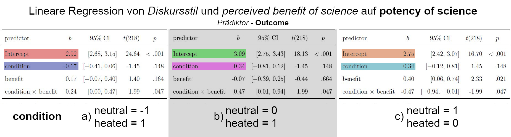

2.5 Variablenkodierung in R
Illustriert an den Daten meiner Masterarbeit: Was passiert, wenn man die Daten in R unterschiedlich kodiert und dann eine Regression drüberlaufen lässt? Hier drei Tabellen:

2.5.1 Intercept und Effekt der kodierten kategorialen Variable
Abhängige Variable ist die wahrgenommene Potency of Science. Kodiert wurde die experimentelle Manipulation Diskursstil.
In Beispiel a) zunächst mit neutral = -1 und heated = 1. Das Intercept ist hierbei der mittlere Punktwert, der beim Item für wahrgenommene Potency über alle Teilnehmer hinweg (egal in welcher Bedingung) angegeben wurde. Der Effekt für condition gibt hier wieder, wie viel Abweichung von diesem Mittelwert die experimentellen Bedingungen jeweils verursachen: In der Bedingung “neutral” liegt der Mittelwert um .17 höher, in der Bedingung “heated” liegt der Mittelwert um .17 niedriger.
In Beispiel b) wird die experimentelle Bedingung mit neutral = 0 und heated = 1 kodiert, was bedeutet: Die Interpretation gilt für die Bedingung neutral. Das Intercept ist also der Mittelwert für die Bedingung neutral, und wir sehen, dass es tatsächlich .17 Punkte höher liegt, als das mittlere Intercept insgesamt! Der Effekt für condition heißt diesmal: Der Unterschied im Mittelwert zwischen neutral und heated. Und in der Tat:
Das Intercept in Beispiel c), das durch die Kodierung neutral = 1 und heated = 0 für die Bedingung heated gilt, stellt den Mittelwert für heated dar - und es ist, wie wir im Effekt von condition für die Gruppe neutral schon ablesen konnten, .34 Punkte höher als der Mittelwert der Bedingung neutral. Entsprechend sagt uns der Effekt für condition für die Bedingung heated umgekehrt, dass der Mittelwert für heated um .34 kleiner ist als der Mittelwert für neutral.
Siehe auch dieser sehr hilfreiche Post auf Stackexchange.